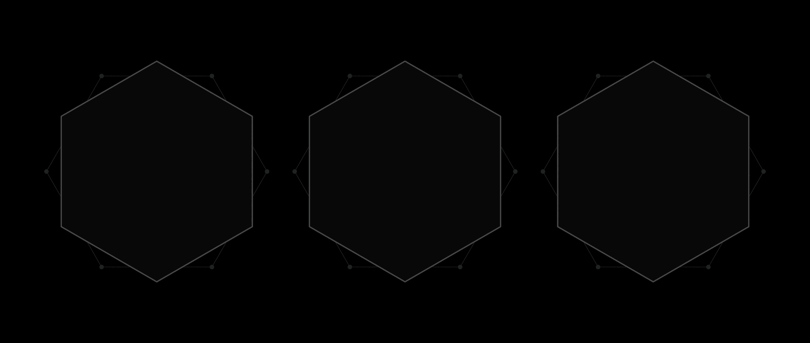

WTF: Co ten frontend?
Anna Rajkowska
WTF: Co ten frontend?
Cześć, nazywam się Anna Rajkowska i powstanowiłam rozpocząć swoją przygodę na froncie. Do tej pory żyłam fotografią i z fotografii, ale rzeczywistość 2020 roku dała mi sporo wolnego czasu na naukę nowych umiejętności ;) Uwielbiam gotować, pielęgnować ogrody i czytać nowinki techniczne. Na codzień mieszkam w Białymstoku i niedawno skończyłam 30 lat.